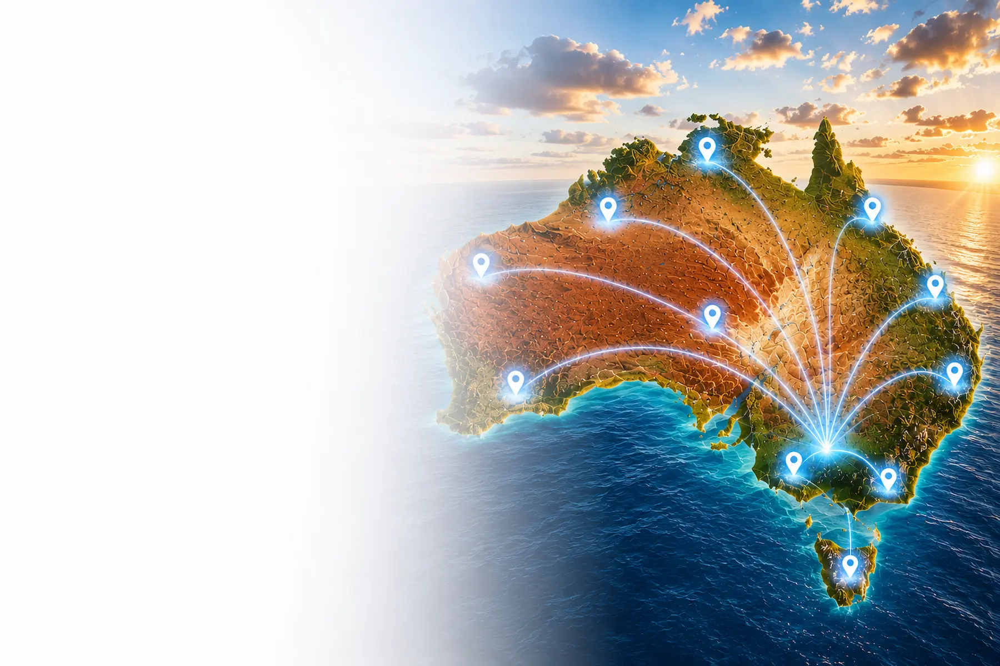

Weak Online Presence
Businesses without professional websites and branding can struggle to appear credible and trustworthy online.
AUSTRALIA-WIDE SMALL BUSINESS SERVICES
Affordable websites, branding, local SEO and business growth services designed to help Australian small businesses improve professionalism, visibility and customer enquiries online.
Crane Platform Labs provides practical business solutions for startups, tradies, cafés, tourism businesses, rural businesses and service-based businesses across Australia.
Our services focus on helping businesses strengthen branding, improve Google visibility and create a more professional business presence online through affordable and practical business growth solutions.
Whether businesses need websites, branding, local SEO, Google Business Profile setup or startup support, our services are designed to help Australian businesses appear more professional and generate more customer enquiries.
Crane Platform Labs combines websites, branding and Google visibility services into one connected business growth ecosystem designed specifically for Australian small businesses.
Small business websites • Branding • Local SEO • Google visibility • Startup services • Australia-wide support
Our Australia-wide business services help Australian small businesses improve branding, strengthen customer trust and create a stronger online presence through websites, branding, local SEO and practical business growth solutions.

THE PROBLEM
Many Australian small businesses struggle with outdated websites, weak branding, low Google visibility and inconsistent online presentation, reducing customer trust and customer enquiries online.
Customers often judge businesses within seconds based on their website, branding and overall online presentation. Businesses with outdated websites or inconsistent branding can appear less trustworthy and less professional compared to competitors.
Many businesses also struggle to appear on Google Search and Google Maps due to weak local SEO, poor Google Business Profile optimisation and limited online visibility strategies.
Without strong branding, professional websites and Google visibility foundations, businesses can miss valuable customer enquiries and growth opportunities online.
Businesses without professional websites and branding can struggle to appear credible and trustworthy online.
Weak local SEO and poor Google Business Profiles can reduce Google Maps visibility and customer discovery.
Inconsistent branding can reduce customer trust and weaken professional business presentation.
Outdated websites and poor branding can reduce customer confidence and first impressions.
Businesses with stronger branding and Google visibility often attract more enquiries online.
Weak online presentation and low visibility can limit long-term customer growth opportunities.
Our Australia-wide business services help Australian small businesses improve branding, strengthen customer trust and create a stronger online presence through websites, branding, local SEO and professional business growth solutions.
CORE SERVICES
Practical business growth services designed to improve branding, visibility, professionalism and customer enquiries for Australian small businesses.
Crane Platform Labs provides connected business growth services that work together to strengthen websites, branding, Google visibility and overall online presentation.
Our services are designed for Australian startups, tradies, cafés, tourism businesses, hospitality businesses and service-based businesses wanting a stronger and more professional online presence.
Each service is designed to support long-term business visibility, customer trust and business growth through practical and affordable business solutions.
Affordable small business websites designed to improve Google visibility, professionalism and customer enquiries online.
Learn MoreProfessional logo design services designed to strengthen branding, recognition and customer trust.
Learn MoreBusiness branding solutions designed to improve professionalism, consistency and online presentation.
Learn MoreLocal SEO services designed to improve Google Maps visibility, local rankings and customer discovery.
Learn MoreGoogle Business Profile setup and optimisation designed to improve visibility across Google Search and Maps.
Learn MorePractical startup business services designed for Australian businesses launching professionally online.
Learn MoreQR review systems designed to help businesses collect more Google reviews and improve customer trust.
Learn MorePractical remote support services available for Australian businesses nationwide.
Contact UsOur core services help Australian small businesses improve visibility, strengthen branding and create a more professional online presence through websites, branding, local SEO and practical business growth solutions.

WHY BUSINESSES CHOOSE US
Crane Platform Labs focuses on practical, affordable and professional business growth solutions designed for Australian small businesses.
We understand that many Australian small businesses need practical and affordable solutions that improve professionalism, strengthen customer trust and support long-term business growth online.
Our services are designed to work together through websites, branding, local SEO and Google visibility solutions that help businesses create a stronger online presence.
Crane Platform Labs supports startups, tradies, cafés, tourism businesses, hospitality businesses and service-based businesses across Australia with straightforward business growth services and Australia-wide support.
Services designed for small business budgets while supporting practical long-term business growth.
Remote support available for businesses across Australia with practical communication and guidance.
Websites and branding designed to strengthen customer trust and professional online presentation.
SEO-focused websites and Google Business Profile services designed to improve visibility online.
Straightforward business services designed to keep the process practical and stress-free.
Services specifically designed for Australian startups and small businesses wanting professional growth.
Crane Platform Labs helps Australian small businesses improve branding, strengthen customer trust and create a stronger online presence through practical websites, branding, local SEO and business growth services.
INDUSTRIES WE SUPPORT
Crane Platform Labs provides websites, branding, local SEO and business growth services for Australian small businesses across a wide range of industries.
Our services are designed for businesses wanting a stronger online presence, better Google visibility and more professional branding across websites, social media and marketing platforms.
From startups and tradies to cafés, tourism operators and regional businesses, we provide practical business growth solutions designed to support Australian small businesses.
Websites, branding and local SEO services for plumbers, electricians, builders, landscapers and contractors.
Professional websites and branding designed for cafés, restaurants and hospitality businesses.
Business growth services for tourism operators, attractions, accommodation providers and regional tourism businesses.
Affordable startup websites, branding and Google visibility solutions for new businesses launching online.
Professional business growth services for rural and regional Australian businesses.
Websites and local SEO services designed to improve visibility and customer enquiries for local businesses.
Our Australia-wide business services help Australian small businesses improve professionalism, strengthen branding and create a stronger online presence through websites, branding, local SEO and practical business growth solutions.
FAQ
Learn more about our Australia-wide business growth services including websites, branding, local SEO, startup support and Google visibility solutions.
Crane Platform Labs provides practical business growth services designed to help Australian small businesses improve professionalism, strengthen branding and generate more customer enquiries online.
Our services are designed for startups, tradies, cafés, tourism businesses, hospitality businesses and service-based businesses wanting a stronger online presence.
Yes — Crane Platform Labs provides websites, branding, local SEO and business growth services for businesses across Australia.
Yes — businesses can combine websites, branding and local SEO services together into one connected business package.
Yes — startup services are available for new Australian businesses wanting professional branding and online visibility.
Services include websites, logo design, branding, local SEO, Google Business Profile setup and QR review systems.
Yes — local SEO and Google Business Profile services are designed to improve visibility across Google Search and Google Maps.
Yes — websites are designed to work properly across phones, tablets and desktop devices.
Yes — affordable website packages are available for Australian small businesses and startups.
Professional branding can improve first impressions, business recognition and customer confidence online.
Local SEO helps businesses improve visibility across Google Search and Google Maps when customers search locally.
Yes — ongoing support options are available for websites, branding and Google visibility services.
Yes — businesses can combine branding, websites, local SEO and startup services together for stronger online presentation.
Services are designed for Australian startups, tradies, cafés, tourism businesses and service-based businesses.
Our Australia-wide business services help Australian small businesses improve branding, strengthen customer trust and create a stronger online presence through websites, branding, local SEO and practical business growth solutions.
READY TO GROW YOUR BUSINESS?
Practical websites, branding and business growth services designed to help Australian small businesses improve professionalism, visibility and customer enquiries online.
Crane Platform Labs provides affordable business growth solutions for startups, tradies, cafés, tourism businesses, hospitality businesses and service-based businesses across Australia.
Our services are designed to strengthen branding, improve Google visibility and create a more professional online presence through websites, branding, local SEO and practical business support.
Whether your business needs a professional website, branding, Google Business Profile setup or business growth support, our Australia-wide services are designed to help businesses appear more professional and generate more customer enquiries online.
Small business websites • Branding • Local SEO • Startup services • Google visibility • Australia-wide support
Our Australia-wide business services help Australian small businesses improve professionalism, strengthen branding and create a stronger online presence through websites, branding, local SEO and practical business growth solutions.